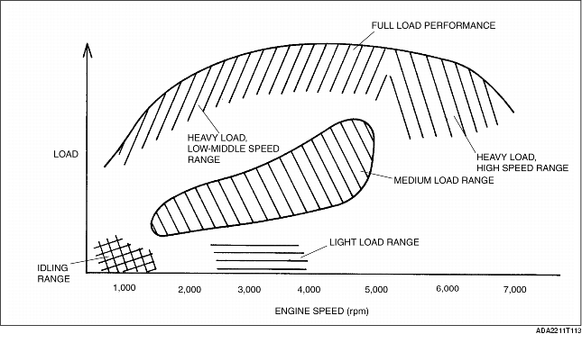

Variable valve timing mechanism function [ZY]
• The variable valve timing mechanism continuously modifies the phases of the variable valve timing actuator and the intake camshaft using hydraulic pressure controlled by the oil control valve (OCV) so that optimal valve timing is obtained according to engine operation conditions.
• The oil control valve (OCV) operation is based on signals from the PCM according to engine operation conditions and it controls hydraulic pressure to the variable valve timing actuator.
Operation and purpose according to driving condition
Idling range, light load range
• Due to a reduction in the amount of overlap, less combusted gas is returned to the intake port. This stabilizes idle speed in the idling range, improving fuel economy, and also ensures engine stability in the light load range.
Medium load range
• Overlap amount has been increased and the EGR ratio inside the cylinder is higher. This reduces engine friction loss (pumping loss), lowering the combustion temperature and reducing the amount of NOx in the exhaust gas. The amount of hydrocarbon emission has also been reduced through reignition of non-combusted gas.
Heavy load, low-middle speed range
• The intake valve is closed early, and high volumetric efficiency is obtained to improve low-middle speed torque.
Heavy load, high speed range
• Timing for intake valve closure is delayed and high volumetric efficiency is obtained to improve maximum output.
When temperature is low
• The overlap amount has been minimized to prevent combusted gas from returning to the intake port and to reduce the additional fuel injection amount. This improves fuel economy and stabilizes fast idle speed.
When engine is started or stopped
• Startability has been improved because the overlap amount has been minimized to prevent combusted gas from returning to the intake port.
